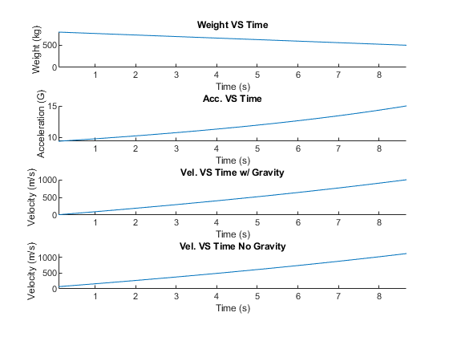

incTime = 0.1;
RUNTIME = 9;
VBO = 1000;
mBO = 500;
mF = 300;
mo = mBO+mF;
g = -9.81;
G = 15;
Isp = -1*VBO/(g*log((mBO+mF)/mBO));
Ve = -1*g*Isp;
mdot = G*(mBO/Isp);
F = Isp*mdot*g;
[wSeries, aSeries, timeSeries, v_45_Series, v_Series, tBO] = massAndA(mdot, mo, mBO, Isp, Ve, VBO, incTime, RUNTIME);
plotData(timeSeries, wSeries, "Weight VS Time", "Time (s)", "Weight (kg)", 1,4, 1, -inf, tBO);
ylim([0 inf]);
plotData(timeSeries, aSeries, "Acc. VS Time", "Time (s)", "Acceleration (G)", 1,4, 2, -inf, tBO);
plotData(timeSeries, v_45_Series, "Vel. VS Time w/ Gravity", "Time (s)", "Velocity (m/s)", 1, 4, 3, -inf, tBO);
plotData(timeSeries, v_Series, "Vel. VS Time No Gravity", "Time (s)", "Velocity (m/s)", 1, 4, 4, -inf, tBO);
disp("I_SP Required: " + string(Isp) + " s");
disp("V_E Computed: " + string(Ve) + " m/s");
disp("Burn time of Rocket: " + string(tBO) + " s");
function [mSeries, aSeries, timeSeries, v_Series, v_45_Series, tBO] = massAndA(mdot, mo, mBO, Isp, Ve, VBO, incTime, endTime)
totalPoints = floor(endTime/incTime);
mSeries = zeros(1, totalPoints);
aSeries = zeros(1, totalPoints);
v_45_Series = zeros(1, totalPoints);
v_Series = zeros(1, totalPoints);
timeSeries = zeros(1, totalPoints);
tBO = (mBO-mo)/(-1*mdot);
vo = VBO - Ve*log(mo/mBO);
vo_45 = VBO - Ve*log(mo/mBO)+ sind(45)*9.81*tBO;
for i = 1:totalPoints
t = i*incTime;
mSeries(i) = -1*mdot*t + mo;
aSeries(i) = (Isp*mdot)/(mSeries(i));
v_45_Series(i) = vo_45 + Ve*log(mo/mSeries(i)) - sind(45)*-9.81*t;
v_Series(i) = vo + Ve*log(mo/mSeries(i));
timeSeries(i) = t;
end
end
I_SP Required: 216.8851 s
V_E Computed: 2127.6431 m/s
Burn time of Rocket: 8.6754 s
